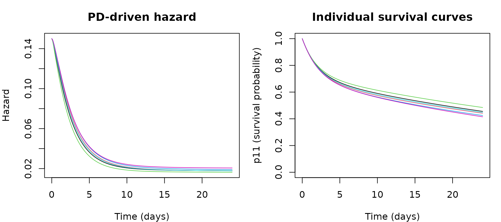
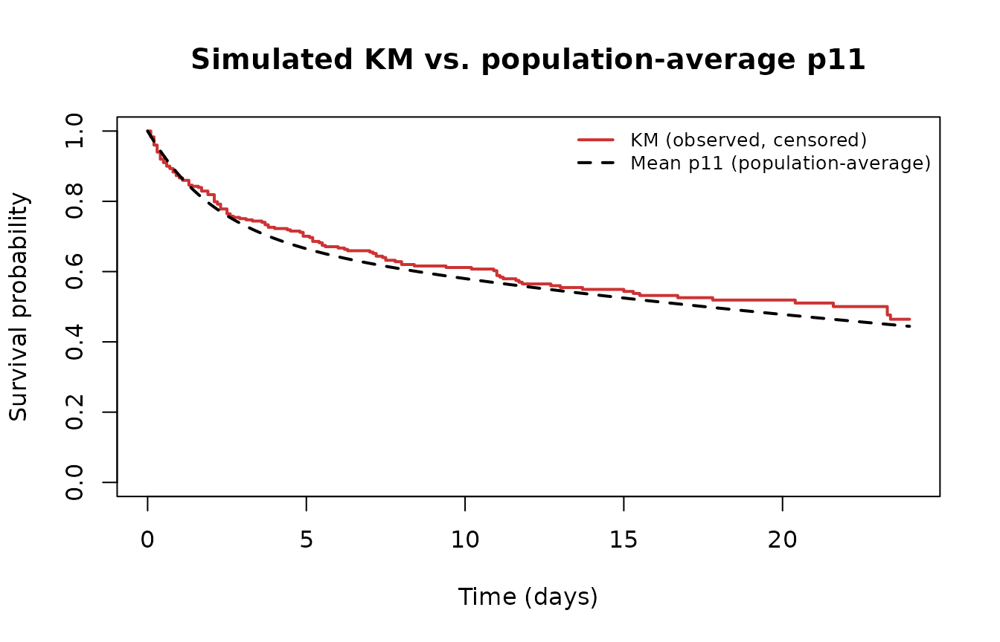

Driving a hazard from a PK/PD ODE system in simtte
Coupling a pharmacokinetic/pharmacodynamic model directly to the event hazard, instead of fitting a flexible parametric shape after the fact
Carlos Traynor
2026-07-14
Source:vignettes/articles/pkpd-hazard-ode-simulation.Rmd
pkpd-hazard-ode-simulation.RmdWhen a flexible hazard still isn’t the right hazard
The first post in this series showed how M-splines let you sketch almost any hazard shape you like — early bumps, plateaus, long tails — without committing to a parametric family. That’s a huge step up from a bare Weibull model, but it’s still fundamentally empirical: you choose knots and coefficients to produce a hazard shape that looks plausible, then simulate from it.
Sometimes you know more than “the hazard looks roughly like this.” If you’re simulating a trial for a drug with a known or hypothesized mechanism of action — say, a compound that suppresses an inflammatory mediator, and elevated levels of that mediator drive event risk — you already have a mechanistic model for why the hazard should evolve the way it does: it’s downstream of the drug’s pharmacokinetics (PK, how the body handles the drug) and pharmacodynamics (PD, what the drug does to the body). In that setting, the more faithful simulation isn’t “pick spline coefficients that resemble the expected effect” — it’s coupling the hazard directly to a PK/PD ODE system and letting the mechanism generate the hazard shape itself, including all its cohort-level heterogeneity, as a direct consequence of the pharmacology rather than a curve-fitting exercise.
This post builds exactly that: a small PK/PD model in
mrgsolve, coupled to the survival probability as an ODE
state, simulated the same way the simtte package’s own
built-in Weibull and M-spline models are — and fed straight into
sim_tte_df().
The PK/PD model
We’ll use a standard, well-established pharmacometric building block:
a one-compartment PK model with first-order oral absorption, feeding an
indirect response model (Dayneka et al. 1993) for the
PD effect. The drug doesn’t act on the hazard instantaneously through
concentration — it suppresses the production of a mediator
R, whose level accumulates or decays according to its own
turnover kinetics. The hazard then depends on the current level of that
mediator, not on concentration directly. This “lag” between
concentration and the risk-driving state is exactly the kind of
indirect, accumulating PD effect the introduction promised.
Concretely:
- PK: absorption rate constant , clearance , volume , giving concentration .
- PD: drug fractionally inhibits the production rate of mediator , with (the untreated steady state).
- Hazard: proportional to the relative level of the mediator versus its untreated baseline, , so at baseline and falls as the drug suppresses .
Rather than computing this hazard and integrating it after the fact,
we add the survival probability itself as a fourth ODE state, exactly
the way simtte’s own bundled Weibull and M-spline models do
it internally (inst/models/ms.cpp,
inst/models/weibull.cpp):
, with
.
mrgsolve’s ODE solver then produces
directly, correctly integrated alongside the PK and PD states in one
pass – no separate trapezoidal-integration step needed.
code <- '
$PARAM CL = 2, V = 20, KA = 1, KIN = 1, KOUT = 0.5, IC50 = 1, IMAX = 0.9, H0 = 0.15
$CMT GUT CENT R
$INIT p11 = 1
$OMEGA @labels ECL EV EIC50
0.09 0.09 0.16
$MAIN
double CLi = CL*exp(ECL);
double Vi = V*exp(EV);
double IC50i = IC50*exp(EIC50);
R_0 = KIN/KOUT;
$ODE
double CP = CENT/Vi;
double INH = IMAX*CP/(IC50i+CP);
double HAZ = H0*(R/(KIN/KOUT));
dxdt_GUT = -KA*GUT;
dxdt_CENT = KA*GUT - (CLi/Vi)*CENT;
dxdt_R = KIN*(1-INH) - KOUT*R;
dxdt_p11 = -p11*HAZ;
$CAPTURE CP HAZ
'
mod <- mcode("pkpd_hazard", code, quiet = TRUE)
mod
#>
#>
#> ------------- source: pkpd_hazard.cpp -------------
#>
#> project: /tmp/RtmpgU7xdZ
#> shared object: pkpd_hazard-so-1e9e6674f916
#>
#> time: start: 0 end: 24 delta: 1
#> add: <none>
#> compartments: GUT CENT R p11 [4]
#> parameters: CL V KA KIN KOUT IC50 IMAX H0 [8]
#> captures: CP HAZ [2]
#> omega: 3x3
#> sigma: 0x0
#>
#> solver: rtol: 1e-08 atol: 1e-08 itol: 1 (scalar)
#> ------------------------------------------------------The model has between-subject variability ($OMEGA) on
clearance, volume, and PD potency (IC50) – standard
lognormal random effects, the usual mrgsolve idiom – so
every simulated subject gets their own PK/PD (and therefore hazard and
survival) trajectory.
Simulating and inspecting PK/PD trajectories first
Before generating a single event time, let’s simulate a small cohort under a once-daily oral dosing regimen (100 mg, 24 doses over a 24-day window) and look at what’s actually driving risk:
n_preview <- 6
data_preview <- expand.ev(ID = 1:n_preview, amt = 100, cmt = 1, ii = 1, addl = 23, time = 0)
out_preview <- as.data.frame(mrgsim(mod, data = data_preview, end = 24, delta = 0.1, obsonly = TRUE))
par(mfrow = c(1, 2), mar = c(4, 4, 3, 1))
plot(NULL, xlim = c(0, 24), ylim = range(out_preview$HAZ),
xlab = "Time (days)", ylab = "Hazard", main = "PD-driven hazard")
for (i in 1:n_preview) {
d <- out_preview[out_preview$ID == i, ]
lines(d$time, d$HAZ, col = i)
}
plot(NULL, xlim = c(0, 24), ylim = c(0, 1),
xlab = "Time (days)", ylab = "p11 (survival probability)", main = "Individual survival curves")
for (i in 1:n_preview) {
d <- out_preview[out_preview$ID == i, ]
lines(d$time, d$p11, col = i)
}
Individual pharmacodynamic hazard trajectories (left) and the corresponding survival probability p11 (right) for six simulated subjects under once-daily dosing
The hazard starts at its untreated baseline (), falls sharply over the first few days as the drug builds up and suppresses the mediator, and levels off once concentration and mediator level reach a new steady state under chronic dosing. The six subjects trace out slightly different curves – that’s the between-subject variability on clearance, volume, and potency doing its job.
From the ODE output straight into sim_tte_df()
This is the part worth being precise about, since it’s easy to get
wrong silently. sim_tte_df() expects a data frame with
individual-level (subject, time) rows and a survival-probability column
named p11 by default (the probability of remaining
event-free at that time – not a hazard). Because we built
p11 as a coupled ODE state above, the mrgsolve
output already contains it directly; there is no manual
hazard-to-survival conversion step required in R.
There is, however, an undocumented contract detail worth flagging:
the package’s internal helpers pull the time value by raw column
position 2 of the data frame, not by the column name
"time". We confirmed this by testing it directly –
reordering columns so that p11 sits in position 2 silently
returns p11 values mislabelled as sampled event times, with no
error. The only safe pattern is to hand sim_tte_df() a data
frame with columns in the exact order (ID, time, p11):
dat_for_sim <- out_preview %>% select(ID, time, p11)
head(dat_for_sim)
#> ID time p11
#> 1 1 0.0 1.0000000
#> 2 1 0.1 0.9851628
#> 3 1 0.2 0.9707686
#> 4 1 0.3 0.9568980
#> 5 1 0.4 0.9435747
#> 6 1 0.5 0.9307982
sim_preview <- sim_tte_df(dat_for_sim)
sim_preview
#> # A tibble: 6 × 3
#> sim_time sim_status ID
#> <dbl> <dbl> <dbl>
#> 1 10.9 1 1
#> 2 24 0 2
#> 3 0.9 1 3
#> 4 24 0 4
#> 5 6.2 1 5
#> 6 11.4 1 6Six subjects in, six simulated event/censoring outcomes out, using
exactly the same sim_tte_df() call as the custom mrgsolve output example in the
package’s own advanced vignette – the only difference is that our
p11 column came from a PK/PD model instead of a
hand-written toy survival probability.
Simulating a full cohort with censoring
Now the same thing at trial scale: 300 subjects, and – to build on the second post rather
than starting over – an independent Weibull censoring time layered on
top, using the same mechanics (observed_time = pmin(...),
status = 1(event <= censoring)), with the important
twist that our event time here already blends a true event with
sim_tte_df()’s own administrative censoring at the 24-day
horizon, so the true-event flag has to be carried through
explicitly:
n <- 300
data_full <- expand.ev(ID = 1:n, amt = 100, cmt = 1, ii = 1, addl = 23, time = 0)
out_full <- as.data.frame(mrgsim(mod, data = data_full, end = 24, delta = 0.1, obsonly = TRUE))
sim_event <- sim_tte_df(out_full %>% select(ID, time, p11))
mean(sim_event$sim_status) # event rate before any additional censoring
#> [1] 0.5266667
apply_censoring <- function(event_time, true_status, shape, scale, seed = 1) {
set.seed(seed)
cens <- rweibull(length(event_time), shape = shape, scale = scale)
data.frame(
observed_time = pmin(event_time, cens),
status = as.integer(true_status == 1 & event_time <= cens)
)
}
cohort <- apply_censoring(sim_event$sim_time, sim_event$sim_status, shape = 1.5, scale = 20)
mean(cohort$status) # event rate after adding independent random censoring
#> [1] 0.4466667Does the simulation recover the intended survival function?
The best sanity check for a mechanistic simulator is to compare the
Kaplan-Meier curve estimated from the simulated (censored) event times
against the population-average p11 curve implied by the
PK/PD model – they should track each other closely, since under
non-informative censoring the Kaplan-Meier estimator is unbiased for the
true marginal survival function that p11, averaged over the
between-subject variability, is estimating:
fit_km <- survfit(Surv(cohort$observed_time, cohort$status) ~ 1)
mean_p11 <- out_full %>% group_by(time) %>% summarise(mean_p11 = mean(p11))
plot(fit_km, col = "#CC3333", lwd = 2, conf.int = FALSE,
xlab = "Time (days)", ylab = "Survival probability",
main = "Simulated KM vs. population-average p11")
lines(mean_p11$time, mean_p11$mean_p11, col = "black", lwd = 2, lty = 2)
legend("topright", legend = c("KM (observed, censored)", "Mean p11 (population-average)"),
col = c("#CC3333", "black"), lwd = 2, lty = c(1, 2), bty = "n", cex = 0.8)
Kaplan-Meier curve from the simulated, censored cohort versus the population-average p11 curve implied by the PK/PD model
The two track closely, with a modest gap opening up in the tail – exactly what you’d expect from Monte Carlo noise at 300 subjects plus a shrinking risk set at later times, rather than any systematic bias in the simulation mechanics.
Does the mechanistic link actually do anything?
To confirm the PK/PD coupling isn’t decorative, we can re-run the
simulation at three different values of IC50 (potency –
lower means a more potent drug, since less concentration is needed to
achieve half-maximal inhibition) and check that the simulated event rate
moves the way pharmacology says it should:
for (ic50 in c(0.3, 1, 5)) {
out_x <- as.data.frame(mrgsim(mod, data = data_full, end = 24, delta = 0.1, obsonly = TRUE,
param = list(IC50 = ic50)))
sim_x <- sim_tte_df(out_x %>% select(ID, time, p11))
cat("IC50 =", ic50, "-> simulated event rate =", round(mean(sim_x$sim_status), 3), "\n")
}
#> IC50 = 0.3 -> simulated event rate = 0.503
#> IC50 = 1 -> simulated event rate = 0.56
#> IC50 = 5 -> simulated event rate = 0.727A more potent drug (IC50 = 0.3) yields the lowest event
rate, a weaker one (IC50 = 5) the highest, with the
reference value in between – the mechanistic link is doing real work,
not just sitting there for show.
Why this matters, and when it’s worth the complexity
A coupled PK/PD hazard is considerably more work to set up than a Weibull or M-spline model: you need a defensible PK/PD structure, plausible parameter values (and their between-subject variability), and a dosing regimen, on top of everything the earlier posts already covered. That complexity buys you something a purely empirical hazard shape cannot: every knob in the simulation maps onto something with a real pharmacological interpretation, and it does so at the individual level. That matters when:
- You’re simulating a trial for a drug with a known or hypothesized mechanism, and want the simulated hazard shape to be a genuine consequence of that mechanism rather than a curve chosen to resemble it.
- You want to propagate PK/PD parameter uncertainty – clearance variability, potency, onset – through to trial-level outcomes such as power or expected event counts, rather than just varying an abstract hazard-shape parameter.
- You’re exploring “what if” pharmacology questions (a more potent compound, faster onset, different dosing frequency) and want the resulting change in the survival curve to be an emergent consequence of the mechanism, as demonstrated in the potency comparison above.
If none of that mechanistic detail is actually informing your simulation – if you just need a plausible-looking hazard shape – the M-spline approach from the first post is far less work for a very similar result. Save the PK/PD route for when the mechanism itself is the thing you’re trying to simulate.
References
- Dayneka NL, Garg V, Jusko WJ (1993). Comparison of four basic models of indirect pharmacodynamic responses. Journal of Pharmacokinetics and Biopharmaceutics, 21(4), 457-478. https://doi.org/10.1007/BF01061691
- Bender R, Augustin T, Blettner M (2005). Generating survival times to simulate Cox proportional hazards models. Statistics in Medicine, 24(11), 1713-1723. https://doi.org/10.1002/sim.2059